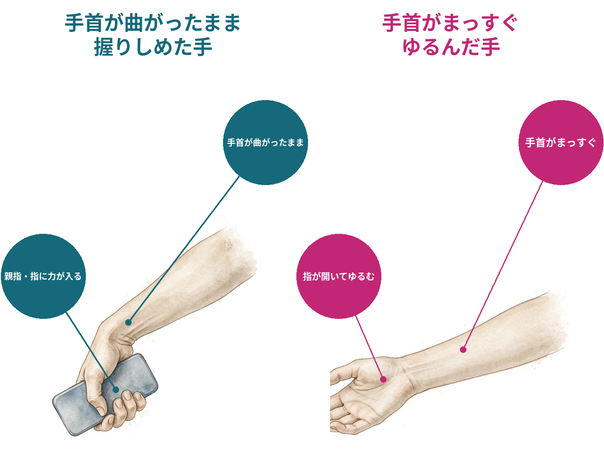

手首・指の疲れ
美容整体ステラ・ポラリス東三国｜大阪市淀川区東三国・東三国駅徒歩5分・女性向け

握りしめた手首と指をゆるめて、軽やかな手元へ
スマートフォンを長時間握る、赤ちゃんを抱っこする、家事で手を使う——現代の生活は、手首と指に負担が集中しやすいものです。夕方になると手首がだるい、指がこわばる感じがする方は少なくありません。手の疲れは、腕から肩の緊張ともつながっています。このページでは、手首・指に負担が集まる仕組みと、腕まわりからゆるめて手元を軽くすることを目指す当サロンでのケア、ご自宅でできるセルフケアをご案内します。手は、一日の中で最も働き者の部位かもしれません。起きてから寝るまで休みなく働く手だからこそ、疲れをためない工夫が大切です。
ご予約はこちら（Coubic）こんなお悩みありませんか
- スマートフォンを長く持つと、手首がだるくなる
- 夕方になると、指がこわばって動かしにくい
- ペットボトルのふたを開けるのが、つらい日がある
- 抱っこや家事のあと、腕全体が重く感じる
- 親指の付け根に、張りを感じることがある
- 手が冷たく、巡りが悪い気がする
- パソコン作業のあと、手首を回したくなる
当てはまる項目が多いほど、手首を曲げたまま使うクセと、腕の緊張が積み重なっている目安とされています。手の疲れは、腕全体からゆるめることが大切です。次のセルフチェックで、手首の動きの傾向を確かめてみましょう。手首の疲れは、利き手に偏りがちです。両手の疲れ方の違いを比べると、使い方のクセが見えてきます。
簡単セルフチェック（手首の動きチェック）
机の上で、手首の動かしやすさを確かめる簡単な方法です。
- 手のひらを机につけ、指先を自分の方に向けて手首の伸びを確認します。
- 次に、手の甲を机につけるつもりで、手首を反対側へ曲げます。
- 片側だけ曲げにくい、親指の付け根が突っ張る場合は、手首まわりの筋肉が固まっている目安と言われています。痛みがあるときは無理をしないでください。
※これは診断ではありません。ご自身の状態の傾向を知る目安としてお使いください。
手首・指の疲れの原因と仕組み
手首を曲げたままの姿勢
スマートフォンを握る手は、手首が少し曲がり、指が握りしめた状態が続きます。この姿勢では、指を曲げる側の筋肉が働きっぱなしになり、手首まわりに負担が集中すると言われています。図1のように、手首の角度ひとつで、腕全体の緊張は変わります。

図1 手首の角度と腕の緊張の関係、手首がまっすぐでゆるんだ状態のイメージ。体の状態には個人差があります。
親指への集中
スマートフォンの操作や抱っこでは、親指に大きな負担がかかります。親指の付け根は小さな関節で、使いすぎると張りやだるさを感じやすい場所です。手の疲れの中でも、親指まわりは現代人に多い訴えの一つです。親指は他の指と向かい合うことで、つまむ・握る動きを生みます。その分、負担も集中しやすい指です。使い終わったらゆるめる、という意識が助けになります。
腕から肩へのつながり
指を動かす筋肉の多くは、前腕にあります。手の疲れが腕のだるさに広がり、さらに肩や首の緊張ともつながるのは、そのためです。手元だけでなく、腕全体、そして肩までゆるめる視点が、手の軽さにつながります。腕のだるさが肩まで広がると、首の重さとして感じることもあります。手の疲れのサインは、体全体からのお知らせでもあります。
巡りと冷えの影響
手は心臓から遠く、巡りが滞ると冷えやすい部位です。緊張が続くと巡りはさらに滞り、こわばりが増す循環に入りがちです。温めてゆるめることは、手のケアの基本になります。
セルフケアで足りる場合・サロンケアが向く場合
疲れが軽く、手を休めたり温めたりすると楽に感じる日が多い場合は、まずご自宅でのセルフケアを続けて様子を見る方法があります。一方で、指のこわばりが毎日のように気になる、腕から肩まで緊張が広がっている、自分ではほぐしにくいという場合は、サロンでのケアが向いている目安になります。サロンでは、手首から腕、肩までをゆるめ、施術後に「手が軽い」「指が動かしやすい」と感じやすい状態を目指します。なお、受診の目安に当てはまる場合は、医療機関への相談を優先してください。施術では、手のひらから指先まで細かく確認し、張りの強い場所を重点的にほぐします。
当サロンでのケア
当サロンの手首・指ケアは、「手元から腕全体をゆるめ、軽やかな手の動きを取り戻す」ことを目指す組み立てです。まず手首の動きと腕の張りを一緒に確認し、部位と目的に合わせて3つの手技を組み合わせます。
美容整体：肩の位置と姿勢の軸を整え、腕全体にかかる負担の土台から見直すことを目的に。手の疲れと姿勢のつながりも整えます。
アロマオイルマッサージ：手のひらから前腕、腕全体をオイルで流れるようにゆるめ、巡りが流れやすい状態を目指します。指の付け根まで丁寧にほぐします。
もみほぐし：張りやすい前腕や肩まわりをほぐし、手元まで軽さが届く感覚を目指して進めます。
ケアを通して目指すのは、こんな変化です。
- 手首・指のこわばりがゆるみ、動かしやすい感覚へ
- 親指の付け根の張りがやわらぐ状態へ
- 腕全体が軽くなり、肩まで楽に感じる状態へ
- 手先まで温かく、巡りが流れるような感覚へ
- 手のほぐし方を知り、日常の合間にケアしやすい状態へ
施術の仕上げには、スマートフォンの合間にできる手のほぐし方や、手首に配慮した持ち方の工夫もお伝えします。手は毎日働く部位です。こまめなケアが、軽い手元を支えます。手のケアは、道具がなくても合間にできます。気づいたときにゆるめる習慣を持ちましょう。

施術の流れ
ご来店後、気になる部位やお悩み、ご希望の強さなどをうかがいます。完全個室のため、周りを気にせずお話しいただけます。
手首の動きや腕の張り、肩の状態などを一緒に確認し、その日の状態に合わせた施術の進め方をご案内します。
美容整体を中心に、ご希望に応じてアロマオイルマッサージ、もみほぐしを組み合わせて進めます。強さは途中でも調整できます。
施術後の状態を確認し、ご自宅で続けやすいセルフケアのポイントをお伝えします。次回の目安についても、ご希望があればご案内します。
料金
| コース | 通常価格 | キャンペーン価格（12/25まで） |
|---|---|---|
| 80分 | 8,000円 | 3,000円 |
| 100分 | 10,000円 | 4,000円 |
| 120分 | 12,000円 | 5,000円 |
クリスマスキャンペーンは12月25日まで、ご新規様もリピーターの方も対象です。施術内容は当日の状態とご希望に合わせて組み立てます。
ご自宅でできるセルフケア
- 手首回し：両手を組んで、手首を大きくゆっくり回します。前回し・後回し各10回、作業の合間に行ってください。
- 指のグーパー：手を大きく開く・握るを繰り返します。20回を目安に、巡りを助けるつもりで行います。
- 前腕のストレッチ：腕を前に伸ばし、反対の手で指先を手前に引いて前腕を伸ばします。左右20秒ずつが目安です。
- 手を温める：温かいタオルで手を包む、湯船で手を開いたり閉じたりするなど、温めてゆるめる習慣を取り入れます。
ご自宅でのケアに：セルフケア資料ライブラリ（無料）
このお悩みに合わせたセルフケアの考え方を、無料の資料ライブラリでご紹介しています。
セルフケア資料ライブラリを開く →
受診の目安
指のしびれが続く場合や、朝のこわばりが長く続く場合、物を落としやすい・力が入りにくいといった症状がある場合は、施術の前に医療機関への受診をおすすめします。手の症状には医療機関での確認が大切なものがあります。気になる症状があるときは、まず医療機関でご相談ください。
よくある質問
Q. 初めてでも大丈夫ですか？
はい。当サロンは完全予約制・完全個室で、1日3組までのご案内です。最初にカウンセリングで手の様子や気になる部位をうかがい、無理のない内容から始めます。施術の前後で「手が軽くなった」「指が動かしやすい」といった感覚の違いを一緒に確認しながら進めますので、初めての方も安心してご利用いただけます。
Q. 施術は痛いですか？
強さは、ご希望をうかがいながら調整します。手や前腕は感じやすい部位のため、心地よいと感じる圧を基本に進めます。感じ方には個人差がありますので、施術中も遠慮なくお声がけください。
Q. コースはどう選べばいいですか？
80分・100分・120分のコースがあり、ケアしたい部位の広さやお時間のご都合に合わせて選べます。手元から腕、肩や首までゆっくり整えたい方には、100分が選ばれることが多いコースです。迷われる場合は、ご予約の際にお気軽にご相談ください。
Q. 場所と予約方法を教えてください。
大阪市淀川区東三国、東三国駅から徒歩5分です。完全予約制のため、予約サイト（Coubic）またはLINE公式アカウントからご予約をお願いしています。
Q. 男性も受けられますか？
当サロンは女性向けのため、男性の方は、同じ東三国の男性専用整体院「北辰堂」をご案内しています。
施術者について
平賀建人（施術歴30年）
鍼灸師・登録販売者・アロマセラピスト・パーソナルトレーナーの資格を持ち、美容整体を中心に、アロマオイルマッサージ、もみほぐしを、その日の状態とご希望に合わせて組み合わせて施術します。このページの内容は、施術者の知識と経験をもとに作成しています。

料金・ご予約
ご新規様もリピーターの方も 12/25まで
80分 3,000円／100分 4,000円／120分 5,000円
通常価格は80分8,000円／100分10,000円／120分12,000円です。施術内容はご希望に合わせて組み立てます。
営業時間：月〜土 17:00〜23:00／日 10:00〜23:00（完全予約制）｜電話：080-2468-3086
大阪府大阪市淀川区東三国2丁目25番4号101（東三国駅徒歩5分）